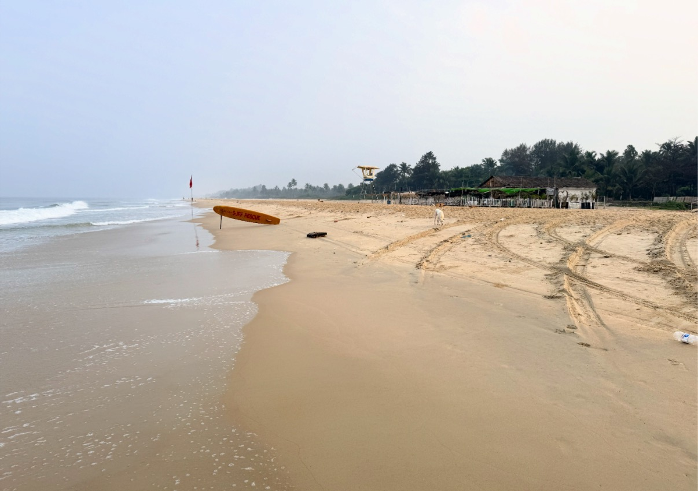
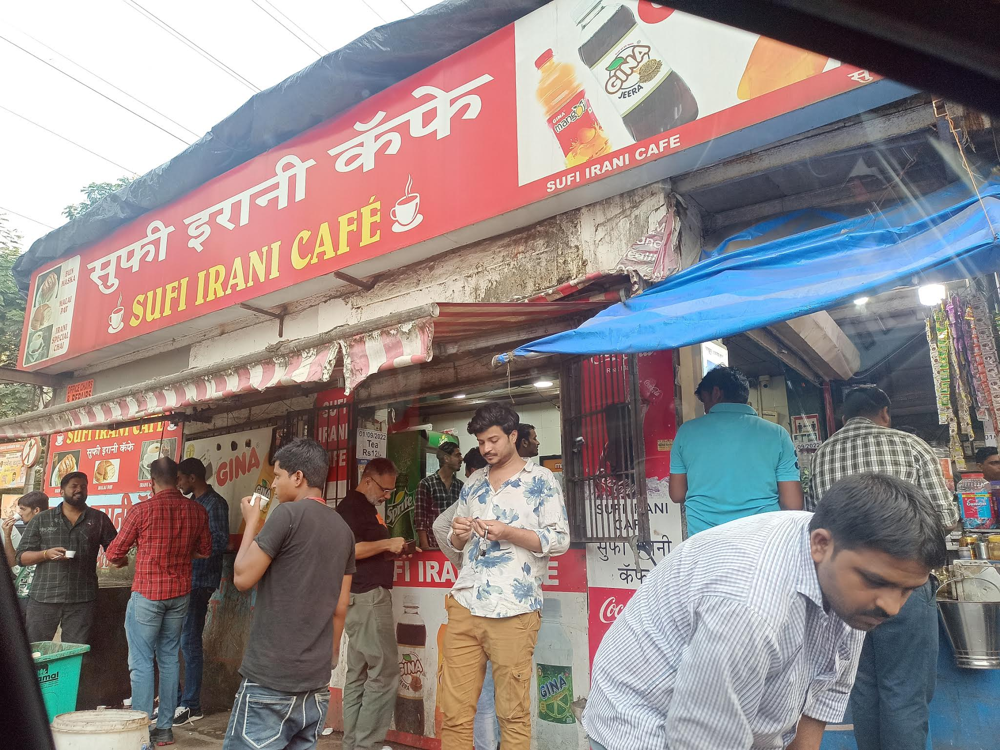

There are friendships that survive mainly as a line of continuity. You may not see each other for years, but when you finally sit down together the conversation resumes with the indecent speed of a browser restoring twenty-seven open tabs. Goa was the setting for one such reunion: an old school friend who now lives in Germany, a stretch of beach, a few drinks, and the familiar pleasure of discovering that neither of you has become as sensible as your responsibilities suggest you should have.

The sunset was doing its part. The conversation required no help.
We talked about children, naturally. Parenting is one of those subjects that makes everyone an expert until the next thing happens. We compared notes on the daily logistics, the small negotiations, the way children can turn a carefully organised day into a live experiment in uncertainty. There is something reassuring about hearing that the same basic chaos operates across countries. The school systems differ, the paperwork differs, the costs differ; the child who has suddenly decided that the plan is unacceptable appears to be a global constant.
Then came taxes, procedures and infrastructure — the adult equivalent of comparing school timetables, except with higher stakes and less chance of getting a sticker for good behaviour. Living in different places gives you a useful vantage point, but not a clean answer key. Germany has its systems and its forms; India has its own mix of ingenuity, friction and extraordinary workarounds. A process that feels obvious in one country can be baffling in another. The point is not that one place is perfect and another is hopeless. It is that systems quietly shape the amount of time and attention people have left for the rest of their lives.
Beer, feni and the occasional attempt to solve public administration before the next round.
We moved, with very little discipline, from bureaucracy to artificial intelligence. That felt appropriate. AI is often discussed as if it were a visitor from another planet, when in practice it is likely to arrive through mundane doors: a form completed faster, a school assignment generated more easily, a customer-service queue that no longer requires a human being, a job whose routine parts begin to disappear. The interesting question is not whether the technology is clever. It is who gets the time it saves, who carries the cost of the disruption, and whether institutions can adapt faster than their paperwork.
That led, inevitably, to politics. Everywhere seems to be experiencing its own version of the same argument: a right-wing turn here, a left-wing backlash there, each side convinced that the other has mistaken the country for a personal project. The labels travel well; the causes do not always. Economic insecurity, migration, identity, inequality, cultural change and distrust of institutions mix differently in each place. It is easy to import someone else's political vocabulary and assume it explains your own street. It rarely does the whole job.
One of the advantages of talking to a friend who lives elsewhere is that you can compare notes without having to turn the comparison into a competition. We could disagree about policy, laugh at the absurdities of procedure, and admit that the systems we live under are neither wholly broken nor wholly admirable. Intelligent conversation, at its best, is not a duel in which one person leaves carrying the flag. It is an attempt to make the map a little less inaccurate.

The beach continued to exist while we discussed the future of civilisation.
Goa is a useful place for this kind of conversation because it has a talent for lowering the volume. The beach does not care whether your preferred economic model has won the argument. The tide comes in regardless. People who might spend the week performing their identities elsewhere are suddenly just looking for a table, a cold drink, a place to sit and a sunset that lasts longer than a phone video. This is not proof that politics is unimportant. It is a reminder that politics is only one part of being human.

An Irani café on the wider journey: the small public places where a city takes a breather.
That café photograph belongs to the same broader Indian habit of making room for a pause. Tea counters, beach shacks, cafés, bars: they are not all democratic spaces in any grand theoretical sense, but they do create small intervals in which people sit near strangers and share the same ordinary infrastructure — a table, a drink, a fan, a view. They are places where the country is not being debated so much as inhabited.
Of course, a few hours of friendship and drinks will not solve taxation, redesign public services or settle the future of AI. It may, however, remind you that the people on the other side of those arguments are also trying to raise children, get through the week, understand a changing world and find a little time to enjoy it. That is not a political programme. It is a useful starting point.
We left with no manifesto, no shared declaration, and no reason to believe that our opinions had become less complicated. We had simply caught up, compared the machinery of our respective lives, and laughed at some of the same things. For a few hours, the world was a little less divided into camps and a little more recognisable as a collection of people making their way through it.
And then there was the bill. Whatever the political system, some realities remain stubbornly immediate.